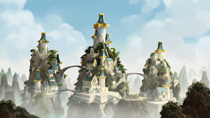
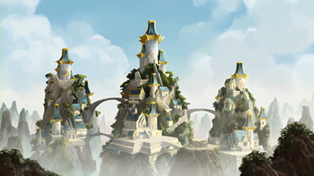
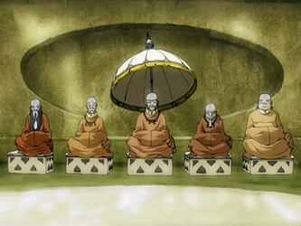

one of the four elemental bending arts, is the aerokinetic ability to control and manipulate air. The peaceful Air Nomads utilized this type of bending in their everyday lives.
Air Nomads is the collective term for the monastic order of men and women who practice the discipline of airbending and their seclusive, theocratic society. One of the four major nations, the Air Nomads were wanderers by definition, but had four air temples, one at each corner of the globe, hidden away atop mountain ranges and under cliffs, in the northern Earth Kingdom and on three remote islands. Unlike the other nations, the people of the Air Nomads were, without any seen exception, all benders due to the high level of spirituality of their people.
The Air Nomads were a peaceful race who were wiped out by the Fire Nation. They lived in large temples and traveled the world on flying bison. They were the most spiritual of all the cultures and lived in harmony with nature. They also were fun-loving and had a strong sense of humor.